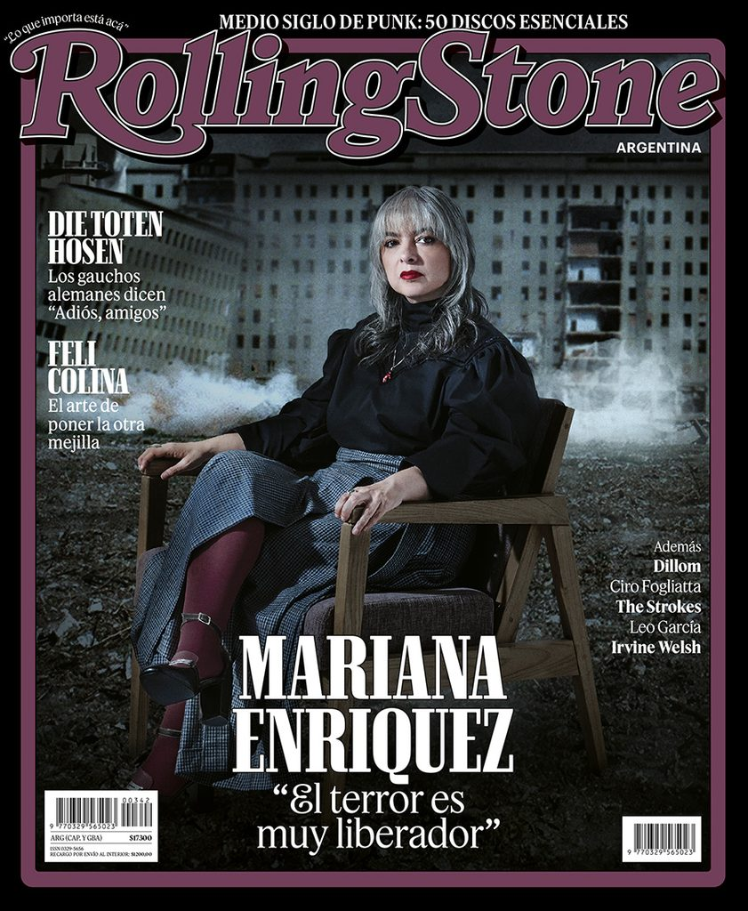

Portada · Número 01
La ‘rockstar’ del miedo: Mariana Enriquez y el pogo literario que sacude los teatros
El terror dejó de ser un secreto de biblioteca y se volvió un evento de escenario.
Redacción Distorsión · Octubre 2026 · 8 min de lectura

El terror abandonó el silencio de las bibliotecas. Lo que durante décadas se leía a solas —lámpara baja, puerta entreabierta, el pulso un poco más alto de lo razonable— hoy se vocifera en teatros repletos, con luces de escenario y un público que responde como si el miedo tuviera estribillo. Mariana Enriquez, la autora que convirtió el horror argentino en un idioma exportable, ya no solo publica: convoca.
El terror es muy liberador.
Hay una escena que se repite, de Buenos Aires a Madrid: la sala se oscurece, alguien lee un párrafo donde un niño desaparece o una casa empieza a respirar, y el público no se queda quieto. Aplaude. Grita. A veces se pone de pie. El pogo literario —esa metáfora que hasta hace poco sonaba a chiste de tapa— se volvió un formato. Enriquez lo entiende con la misma lucidez con la que escribe sus cuentos: el miedo es más verdadero cuando se comparte en voz alta.
Su obra —de Los peligros de fumar en la cama a Nuestra parte de noche— siempre tuvo voltaje de recital. No por pose, sino por método. El terror de Enriquez no vive en castillos ni en linajes victorianos: vive en el conurbano, en los baldíos, en las promesas rotas de la democracia y en los cuerpos que el Estado dejó tirados. Es un terror con calle, con historia, con nombre y apellido. Por eso, cuando sale del libro y sube a un escenario, no se “adapta”: se amplifica.
En una entrevista reciente para este medio, la escritora lo dice sin maquillaje: el terror es muy liberador. La frase parece un eslogan y es, en realidad, un programa estético. Liberador porque nombra lo que la crónica policial apenas recorta. Liberador porque permite que una generación criada entre crisis, femicidios y recortes se reconozca sin pedir permiso a la alta cultura. Liberador, también, porque el grito colectivo desactiva la vergüenza de tener miedo.
Los teatros que la reciben no son templos de la letra. Son, cada vez más, salas que también programan bandas, lecturas performáticas, ciclos de cine sucio. El público llega con la misma ropa con la que iría a un show de Dillom o a un after de Feli Colina. Ese cruce no es marketing: es el mapa cultural de una época que ya no distingue entre el cuento, el disco y el vivo. Enriquez está, sin haberlo pedido del todo, en el centro de ese mapa.
Queda una pregunta, y es la que esta revista se hace en cada número: ¿qué pasa cuando el miedo se vuelve masivo? ¿Se diluye, o se vuelve más preciso? En las páginas que siguen —y en el audio que acompaña esta portada— Enriquez no ofrece consuelo. Ofrece algo mejor: un volumen al que se le puede entrar de pie.
Audio embebido
Mariana Enriquez lee (y el teatro responde)
Episodio 01 · fragmento de portada